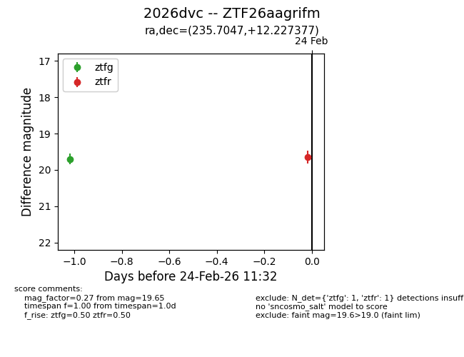
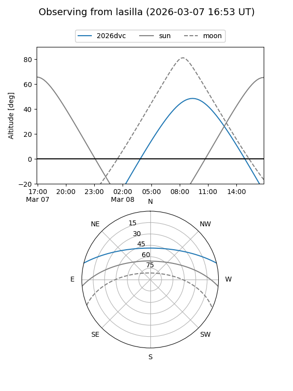
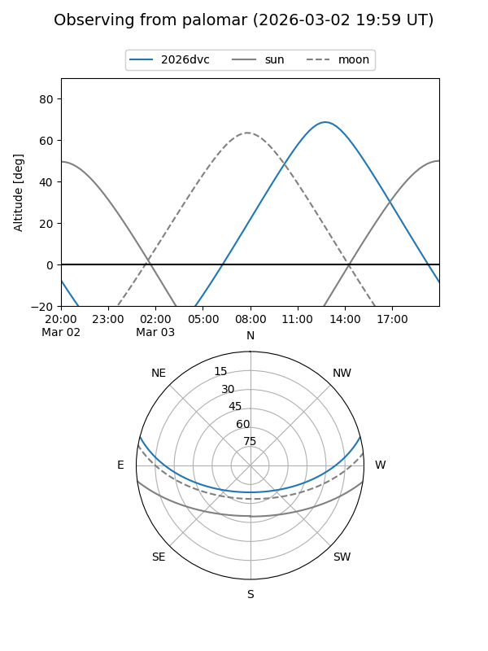
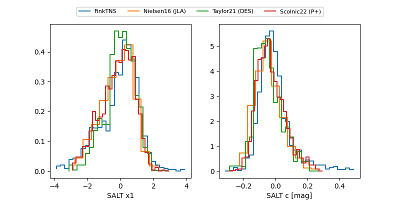

2026dvc
Target 2026dvc at 2026-02-24 11:33
Aliases and brokers:
FINK: link
Lasair: link
ALeRCE: link
TNS: link
YSE: link
alt names
ZTF26aagrifm (ztf,fink_ztf)
2026dvc (tns,yse)
Coordinates:
equatorial (ra, dec) = 235.7047,+12.22738
equatorial (HMS+DMS) = 15:42:49.12,+12:13:38.56
galactic (l, b) = (21.1809,+47.24849)
Flags:
Photometry:
last ztfg=19.70, ztfr=19.65
1 ztfg, 1 ztfr detections
Lightcurve

Visibility


Additional plots
